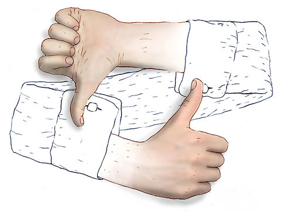

Question: Should we treat intelligent animals like Tilikum Differently?
Regarding Safety From Predators
Can effectively analyze their surroundings (Jennifer Viegas)
Some animals can understand some of our languages (Jennifer Viegas)
Can remember any human companions they made in the past (Jennifer Viegas)
Predators before striking often analyze the movement, emotion, and overall condition of their prey (Jennifer Viegas)
Abuse often amplifies these characteristics
Overall these characteristics create a highly unsafe environment for trainers at zoos and amusement parks
In the long term
The offspring of these abused animals will become more deadly towards humans and to each other
Some individuals who may see animals harming humans may try to take charge and attack the animals even more, causing more conflict
In Summary
I absolutely believe that we are treating all animals with the respect and dignity that they deserve
As of which we should rethink the way that we treat animals both in facilities and in the wild
Some alternatives could include keeping an the offspring of an animal with their parents or immediately taking action when an animal is being abused at a facility or in the wild
Question: What is a Connecting philosophical theory or concept?
A connecting philosophical concept is Moral Absolutism
A belief that certain things are either morally wrong or right (Mastin)
There is no in between right or wrong (Mastin)
The concept connects to my argument as I am practically stating that there is no moral in between when it comes to the way we are treating animals

Question: What is a conflicting philosophical theory or concept?
A conflicting philosophical concept is Capitalism
Can be described as an economic system based on an individual or a group having complete control on their goods and profits (2003)
This system often results in people having the simple goal of making as much money as possible (2003)
Conflicts with my argument because often times animals are housed in theme parks as they usually offer a high source of income from the attractions they are featured in (2003)